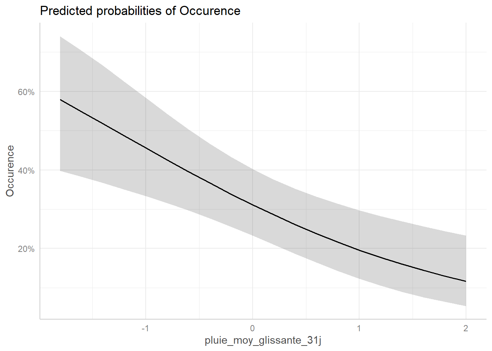
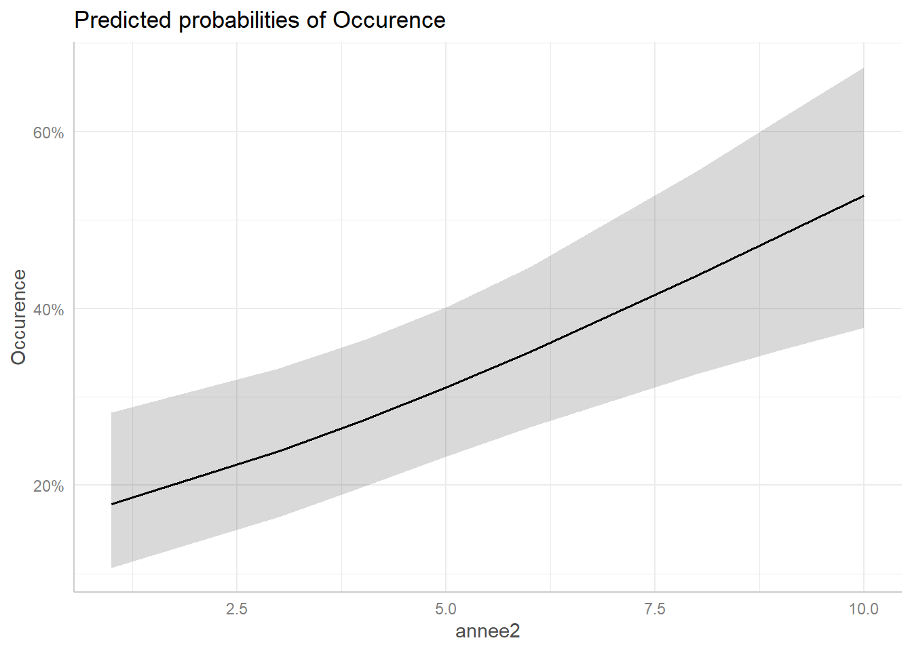
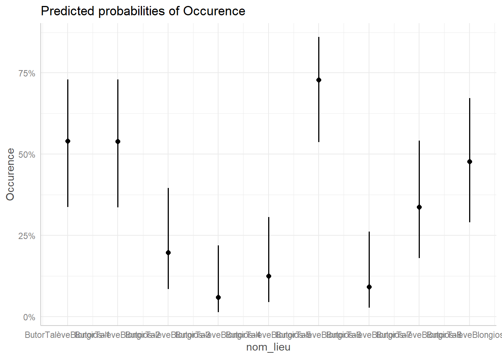
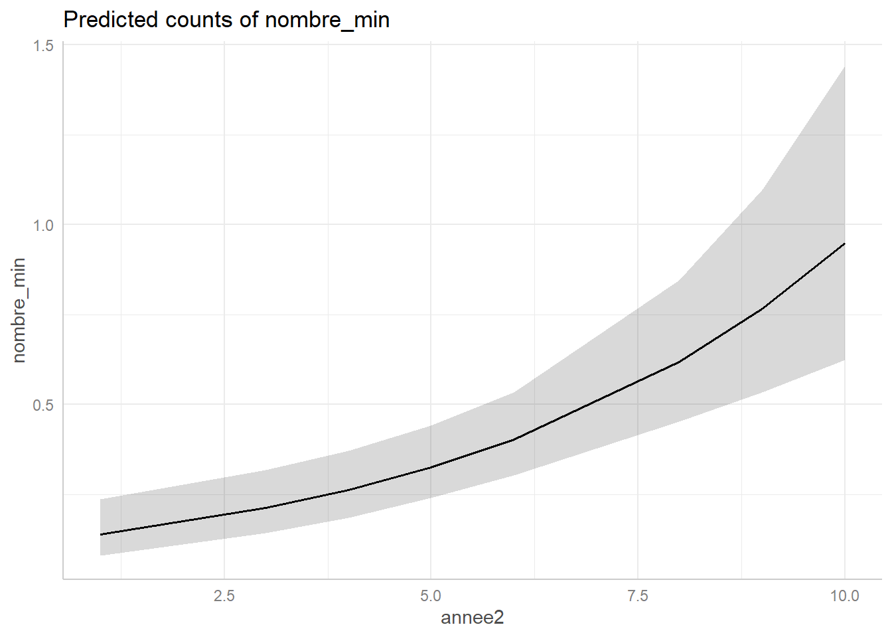
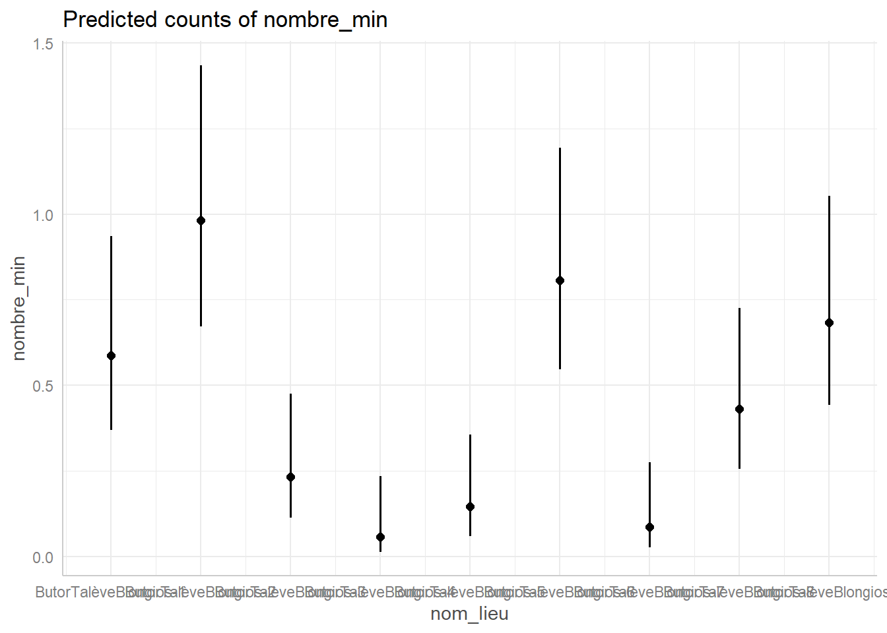

knitr::opts_chunk$set(
warning = FALSE,
message = FALSE,
echo = FALSE
)
#ce code permet de n'afficher aucun message parasite ni les warnings. clean_taleve
#Charger les données et les library
1. analyses exploratoires de la Talève
#A- Graphique de présence des Talèves par semaine depuis 1990
Le graphique suivant représente pour chaque année (en ligne), au court de quelle semaine (en colonne) la talève a été observé et s’il s’agit d’observations opportunistes ou protocolées. Le graphique indique aussi les sorties protocolées où le blongios n’a pas été observé. La ligne pointillée bleue correspond à 2014, début du protocole de point d’écoute de la talève. Celui-ci se déroule du 10 avril au 16 mai, période favorable pour la détection de mâles chanteurs.

on voit que le protocole est réalisé pendant la periode historique d’écoute et d’observation du la talève. Nous pouvons voir que la talève est présente tout au long de l’année.
#B- Cartographie de la présence des Butors sur les sites d’écoute du protocole
Cette carte donne la localisation des points d’écoute du protocole talève et le nombre de talèves contactés (en cliquant sur les points).
#C- Effort journalier des données protocoles Talève
Ce graphique représente l’effort d’échantillonnage ainsi que le nombre d’obervations cumulés au cours du protocole talève pour chaque heure de la journée de 2014 à 2025. L’effort d’échantillonnage est représenté par la somme des sorties effectuées.
# A tibble: 7 × 2
heure_debut_tronc `sum(nombre_min)`
<int> <dbl>
1 5 6
2 6 42
3 7 21
4 8 2
5 19 3
6 20 37
7 21 23
En orange l’effort d’échantillonngage et en bleu le nombre de talèves observés/entendus.
#D- Effort journalier des données opportunistes Talève
Ce graphique représente le nombre cumulé d’observations opportunistes ainsi que le nombre cumulé de talèves observés de cette manière pour chaque heure de la journée entre 1997 et 2023. Les observations pour lesquelles l’heure n’était pas disponible ont été enlevées, expliquant l’intervalle temporel réduit.
# A tibble: 11 × 2
heure_debut_tronc `sum(nombre_min)`
<int> <dbl>
1 4 1
2 5 28
3 6 61
4 7 46
5 8 174
6 9 29
7 10 3
8 11 4
9 19 3
10 20 58
11 21 30
LA couleur orange représente les observations protocolées et le bleu représente les observations opportunistes. Nous retrouvons le meme patron entre les deux types d’observations
2 Preparation du jeu de données et des variables
Pour les analyses de présence et d’abondance, nous utilisons uniquement les données d’observation de la talève provenant des observations protocolées. Ce jeu de données sera nommé Protocole_SuiviTaleve.**
id_synthese date_debut date_fin heure_debut heure_fin
1 115476 2019-05-22 2019-05-22 06:09:00 06:09:00
2 115477 2019-05-22 2019-05-22 06:29:00 06:29:00
3 115478 2019-05-22 2019-05-22 06:53:00 06:53:00
4 115479 2019-05-22 2019-05-22 07:13:00 07:13:00
5 115480 2019-05-22 2019-05-22 07:30:00 07:30:00
6 115481 2019-05-22 2019-05-22 06:51:00 06:51:00
nom_vernaculaire nombre_min observateurs
1 Talève sultane, Poule sultane, Porphyrion bleu 3 Lognos Mathieu
2 Talève sultane, Poule sultane, Porphyrion bleu 2 Fortuny Xavier
3 Talève sultane, Poule sultane, Porphyrion bleu 5 Lognos Mathieu
4 Talève sultane, Poule sultane, Porphyrion bleu 3 Lognos Mathieu
5 Talève sultane, Poule sultane, Porphyrion bleu 0 Lognos Mathieu
6 Talève sultane, Poule sultane, Porphyrion bleu 0 Fortuny Xavier
determinateur x_centroid_4326 y_centroid_4326 nom_lieu
1 Lognos Mathieu 3.524423 43.32985 ButorTalèveBlongios-1
2 Fortuny Xavier 3.519831 43.31774 ButorTalèveBlongios-3
3 Lognos Mathieu 3.510068 43.32732 ButorTalèveBlongios-9
4 Lognos Mathieu 3.509005 43.32042 ButorTalèveBlongios-6
5 Lognos Mathieu 3.503405 43.32293 ButorTalèveBlongios-7
6 Fortuny Xavier 3.510314 43.31477 ButorTalèveBlongios-4
champs_additionnels annee station_id temperature pression
1 {'RELV_NOM': 'SuiviBlongiosTalève'} 2019 NA 20.4 1015.832
2 {'RELV_NOM': 'SuiviBlongiosTalève'} 2019 NA 20.4 1015.832
3 {'RELV_NOM': 'SuiviBlongiosTalève'} 2019 NA 20.4 1015.832
4 {'RELV_NOM': 'SuiviBlongiosTalève'} 2019 NA 20.4 1015.832
5 {'RELV_NOM': 'SuiviBlongiosTalève'} 2019 NA 20.4 1015.832
6 {'RELV_NOM': 'SuiviBlongiosTalève'} 2019 NA 20.4 1015.832
pression_variation_3h humidite point_de_rosee visibilite vent_moyen
1 0.0736 63.96528 12.73194 NA 3.989583
2 0.0736 63.96528 12.73194 NA 3.989583
3 0.0736 63.96528 12.73194 NA 3.989583
4 0.0736 63.96528 12.73194 NA 3.989583
5 0.0736 63.96528 12.73194 NA 3.989583
6 0.0736 63.96528 12.73194 NA 3.989583
vent_rafales vent_rafales_10min vent_direction temperature_min
1 NA 13.32639 272.5694 14.85
2 NA 13.32639 272.5694 14.85
3 NA 13.32639 272.5694 14.85
4 NA 13.32639 272.5694 14.85
5 NA 13.32639 272.5694 14.85
6 NA 13.32639 272.5694 14.85
temperature_max pluie_1h pluie_3h pluie_6h pluie_12h pluie_24h pluie_cumul_0h
1 24.03958 0 NA NA NA NA 0
2 24.03958 0 NA NA NA NA 0
3 24.03958 0 NA NA NA NA 0
4 24.03958 0 NA NA NA NA 0
5 24.03958 0 NA NA NA NA 0
6 24.03958 0 NA NA NA NA 0
pluie_intensite pluie_intensite_max_1h uv uv_index ensoleillement
1 0 0 307.2847 1.736111 NA
2 0 0 307.2847 1.736111 NA
3 0 0 307.2847 1.736111 NA
4 0 0 307.2847 1.736111 NA
5 0 0 307.2847 1.736111 NA
6 0 0 307.2847 1.736111 NA
temperature_sol temps_omm complements source date julian
1 NA NA NA NA 18038 142
2 NA NA NA NA 18038 142
3 NA NA NA NA 18038 142
4 NA NA NA NA 18038 142
5 NA NA NA NA 18038 142
6 NA NA NA NA 18038 142
temp_moy_glissante_31j temp_moy_glissante_7j pluie_moy_glissante_31j
1 15.73741 16.38498 0.03814795
2 15.73741 16.38498 0.03814795
3 15.73741 16.38498 0.03814795
4 15.73741 16.38498 0.03814795
5 15.73741 16.38498 0.03814795
6 15.73741 16.38498 0.03814795
pluie_moy_glissante_7j Profondeur AssecT_1
1 0.07244112 0.7893333 non
2 0.07244112 0.7893333 non
3 0.07244112 0.7893333 non
4 0.07244112 0.7893333 non
5 0.07244112 0.7893333 non
6 0.07244112 0.7893333 nonLe tableau résulte de la fusion d’un tableau contenant les variables environnementales (environnement_daily) et d’un tableau regroupant les observations de talèves.
Nous allons préparer les variables environnementales, c’est‑à‑dire les standardiser afin qu’elles ne soient pas influencées par leur unité et pour éviter une sur‑ ou sous‑dispersion.
##2 . Modèle de présence/absence
df AIC
modele_complet_site 12 300.7632
modele_complet_anneesite 20 291.8432
modele_complet_vent 13 296.3882
modele_complet_temp_31 14 291.6140
modele_complet_temp_7j 14 295.5876
modele_complet_temp_1j 13 295.1475
modele_complet_temp_1j_vent 14 296.8998
modele_complet_pluie_31j_vent 14 285.5789
modele_complet_pluie_7j_vent 14 288.8839
modele_complet_pluie_1j_vent 14 296.5147


##2.1 Interpretation
Le modèle GLM explorant la présence de la Talève sultane en fonction du temps, de la profondeur et de l’assec de l’année précédente montre que la profondeur moyenne a un effet significatif positif sur la probabilité de présence (Estimate = 2,19, p = 0,035). Les variables temporelles (date julienne et son terme quadratique) ne sont pas significatives (p ≈ 0,09–0,10), indiquant que la présence de l’espèce n’évolue pas de façon marquée au cours de la période 2014–2024. Les effets de l’assec de l’année précédente sont faibles et non significatifs, avec un assec partiel ayant un effet légèrement négatif et un assec total un effet légèrement positif (p ≈ 0,17–0,08).
3 . Modèle d’abondance
Cette analyse vise à caractériser la dynamique de la population de Talève et à déterminer l’influence relative des variables temporelles (année, date julienne) et environnementales (précipitations et temperatures) sur l’abondance observée.
3.1 Modèle d’abondance en fonction du temps
Nous réalisons cette analyse sur seulement les observations qui proviennent du protocole (donc pas les observations opportunistes)
df AIC
modele_complet_site 12 488.8824
modele_complet_anneesite 20 486.6620
modele_complet_vent 13 477.9002
modele_complet_temp_31 14 476.4654
modele_complet_temp_7j 14 477.8364
modele_complet_temp_1j 13 477.1383
modele_complet_temp_1j_vent 14 476.8510
modele_complet_pluie_31j_vent 14 469.6490
modele_complet_pluie_7j_vent 14 477.1217
modele_complet_pluie_1j_vent 14 476.5513
modele_complet_profondeur 14 471.9984
modele_complet_assec 15 458.0642


La sélection de modèle par l’AIC a désigné la combinaison des effets temporels (année et jour julien) comme structure optimale. Ce modèle servira de base à notre analyse pour tester l’apport des variables environnementales, telles que la pluviométrie, sur l’abondance des individus.
La comparaison des modèles par l’AIC montre que l’intégration de la pluie moyenne glissante sur 31 jours améliore légèrement la capacité prédictive du modèle. En revanche, les variables de température n’apportent aucune amélioration supplémentaire et ne sont donc pas retenues.
Les paramètres estimés indiquent que :
La pluie moyenne glissante sur 31 jours n’a pas d’effet négatif significatif sur l’abondance des talèves (β = −0.179, p =0.08). Donc une variation de la quantité de pluie entre les mois n’influence pas une diminution ou augmentation du nombre d’individus
L’année a un effet positif significatif sur l’abondance (β = 0.155, p < 0.001), suggérant une augmentation progressive du nombre de talèves au cours des années.
Le jour julien présente un effet négatif significatif (β = −0.569, p = 0.002), indiquant une diminution de l’abondance au cours de la saison ( ce qui est logique car le protocole n’est pas effectué en fin d’année )
L’interaction entre l’année et le jour julien est faiblement positive et significative (β = 0.059, p = 0.034), suggérant que la dynamique saisonnière varie peu d’une année à l’autre.
Globalement, le modèle permet d’expliquer une part substantielle de la variabilité observée (déviance résiduelle = 308.28 contre une déviance nulle de 354.24), avec un AIC de 545.09.
La fonction pour trouver l’abondance du blongios en fonction de la pluie , de l,’année et des jours est :
log(y) = -1.48879 + 0.15277(annee2[i]) - 0.59216 (julian[i]) -0.17924(pluie[i]) + 0.05917(annee[i]*julian[i])
graphes probabilité de détection par année

quelles variables font le meilleur glm (préparation au n mixture)
df AIC
m0 1 306.4047
m_date 3 307.2870
m_site 9 271.8103
m_annee 6 295.9490
m_date_site 11 272.7278
m_date_annee 8 294.8044
m_site_annee 14 253.7368
m_full 16 251.2487
Call:
glm(formula = presence ~ j_julien + j_julien2 + nom_lieu + annee,
family = binomial, data = process_data)
Coefficients:
Estimate Std. Error z value Pr(>|z|)
(Intercept) -1.126e+01 1.094e+01 -1.029 0.303427
j_julien 1.389e-01 1.262e-01 1.100 0.271115
j_julien2 -4.471e-04 3.601e-04 -1.241 0.214430
nom_lieuButorTalèveBlongios-2 -4.460e-01 6.281e-01 -0.710 0.477667
nom_lieuButorTalèveBlongios-3 -1.721e+00 6.829e-01 -2.521 0.011713 *
nom_lieuButorTalèveBlongios-4 -3.144e+00 8.956e-01 -3.511 0.000447 ***
nom_lieuButorTalèveBlongios-5 -2.294e+00 7.417e-01 -3.093 0.001979 **
nom_lieuButorTalèveBlongios-6 1.046e+00 6.361e-01 1.645 0.100070
nom_lieuButorTalèveBlongios-7 -2.662e+00 7.964e-01 -3.342 0.000831 ***
nom_lieuButorTalèveBlongios-8 -1.479e+00 6.655e-01 -2.222 0.026272 *
nom_lieuButorTalèveBlongios-9 -6.397e-01 6.311e-01 -1.014 0.310755
annee2016 4.400e-01 5.351e-01 0.822 0.410961
annee2018 1.471e+00 8.702e-01 1.690 0.091010 .
annee2019 1.827e+00 5.447e-01 3.353 0.000799 ***
annee2021 1.967e+00 5.437e-01 3.617 0.000297 ***
annee2023 2.413e+00 5.509e-01 4.381 1.18e-05 ***
---
Signif. codes: 0 '***' 0.001 '**' 0.01 '*' 0.05 '.' 0.1 ' ' 1
(Dispersion parameter for binomial family taken to be 1)
Null deviance: 304.40 on 236 degrees of freedom
Residual deviance: 219.25 on 221 degrees of freedom
AIC: 251.25
Number of Fisher Scoring iterations: 5